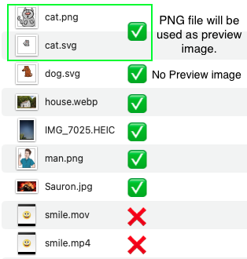
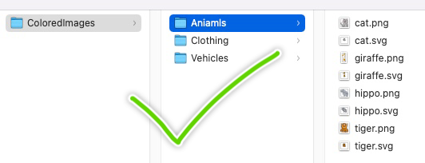

Need more images in Flixcribir? Now you can make your own image bundle.
A variety of image formats are supported for making image bundles. It is worth noting that when using SVG files, you also need to provide a PNG file as the preview image, and both files must have the same name and be in the same directory，it will also work if you don't provide a PNG file, but you won't see the preview image. Files in other formats do not have this requirement.
Currently, only image files are supported.
See image below to learn more:
Copy your images to the Files application and make sure your files directory structure is as follows:
Open Flixcribir, click Create Image Bundle, select your image directory, and let Flixcribir do the rest.
If your bundle is created correctly, it will load automatically,
and you can also find your image bundle file in the "On my iPhone/Flixcribir/Describir/Image Bundles" directory in the Files app.